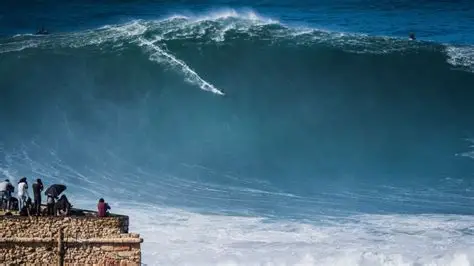
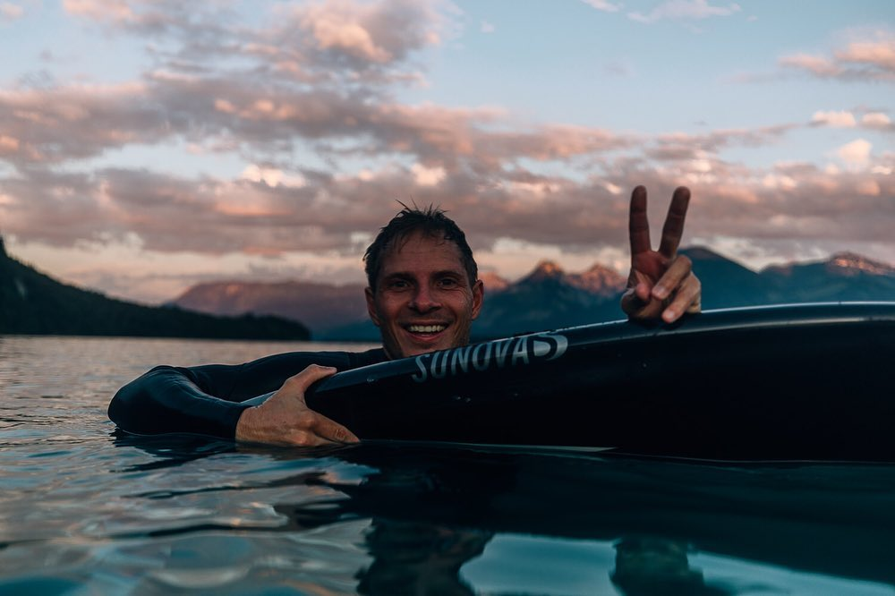
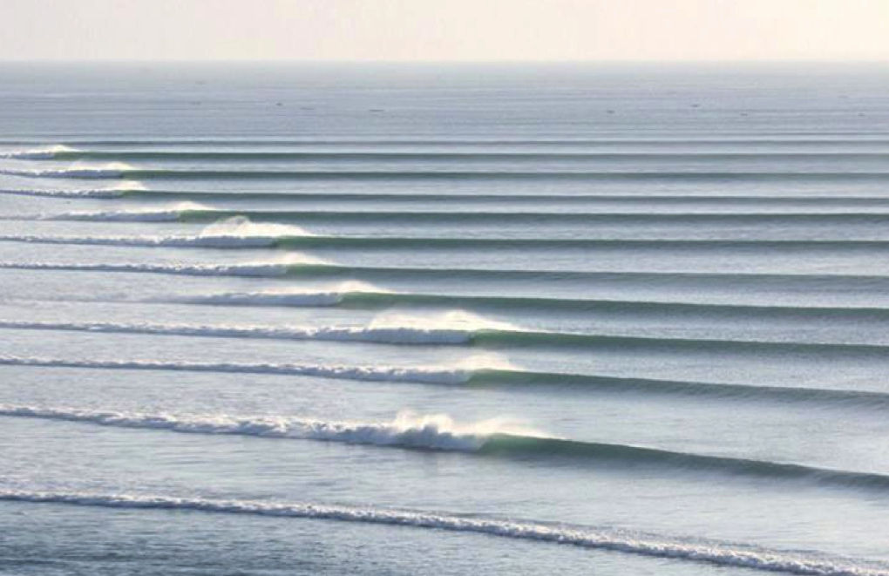
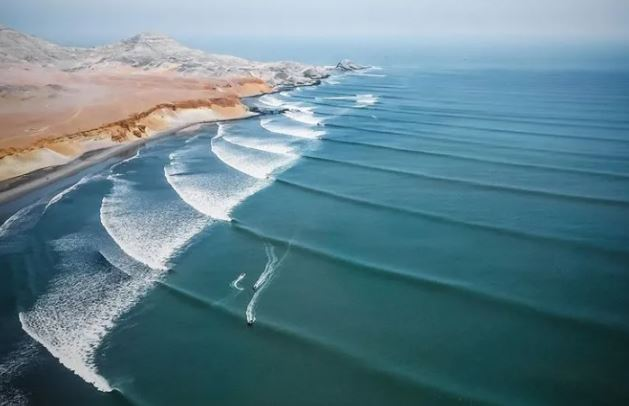
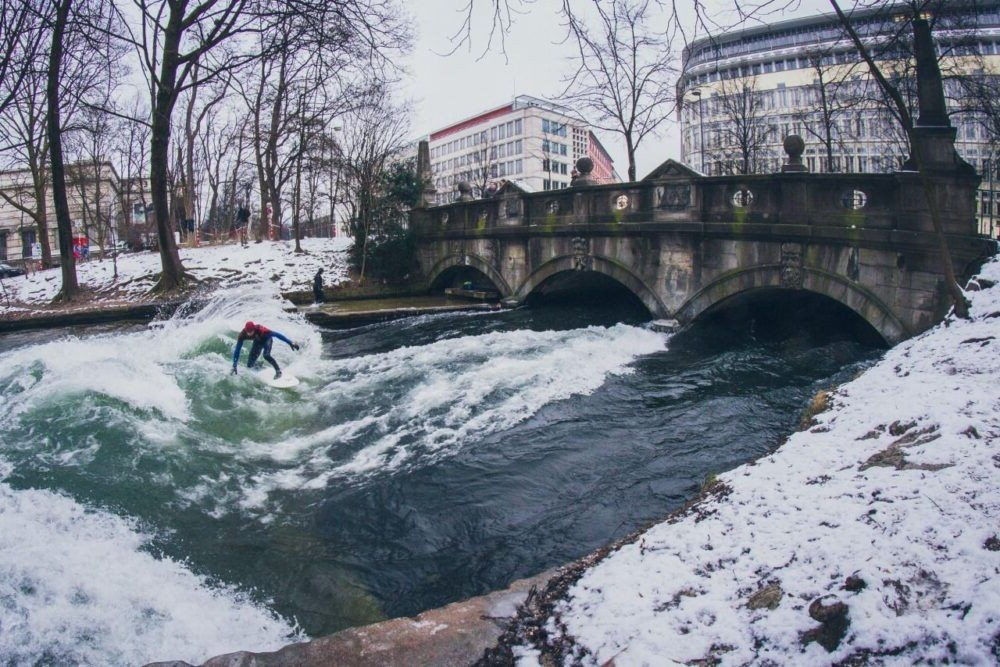
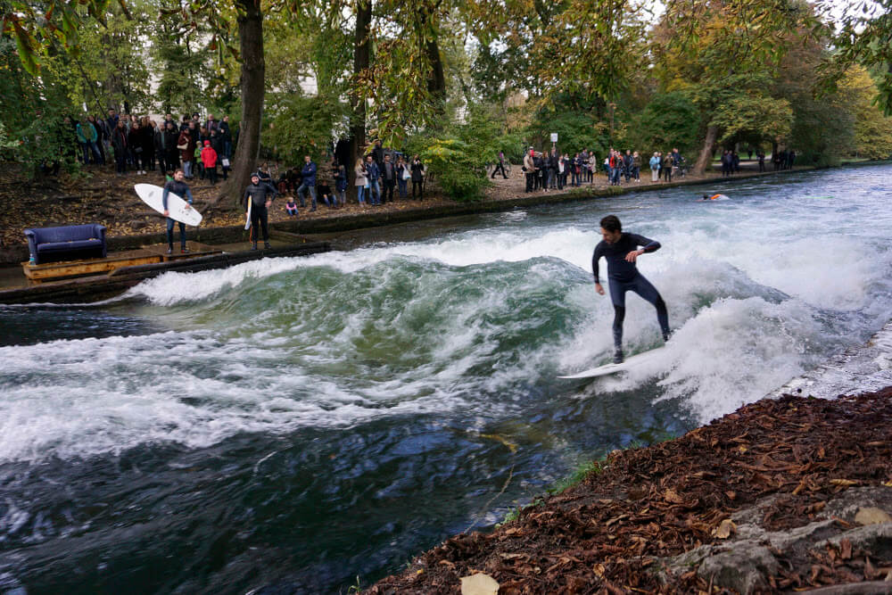

Le surf se pratique sur des sites de surf, appelés « spots », sur lesquels déferlent des vagues plus ou moins grandes et propices à la glisse.
Le spot de Nazaré au Portugal, sur l'océan Atlantique, est à ce jour le spot des plus grosses vagues surfables du monde, de plus de 30 m de haut pour plus de 60 km/h. Le reccord de la vague la plus grande surfée et celui de Sebatien Steudtner, une vague de 28,57 mètres.


Il existe deux types de vagues : Les gauches et les droites. Pour éviter toute confusion, les surfeurs identifient toujours les directions de vagues selon le point de vue du surfeur.
Une gauche est donc une vague qui "déroule" vers la gauche du point de vue du surfeur sur la vague. Pour les personnes qui regardent de la plage, la vague cassera vers la droite. La vague de Chicama au Pérou peut atteindre 1.5 km de long lorsque les conditions sont réunies, faisant d'elle la vague la plus longue du monde. C'est sur cette vague que le surfeur pro péruvien Cristobal De Col a réussi le plus grand nombre de manoeuvres sur une même vague. Résultat : 34 manoeuvres, pour un ride d'environ 2 minutes.


Une droite au contraire est une vague qui "déroule" vers la droite, du point de vue du surfeur. De la plage, la vague déroulera donc vers la gauche. La droite Jeffreys Bays en Afrique du Sud est une vague à tubes rapide et puissante c'est l'une des meilleurs droites au monde, et surtout la plus longue. A quelques rares occasions, quand J-Bay semble parfait, elle peut mesurer jusqu'à 1km. Une autre vague mythique, située à Imsouane est devenue une véritable légende dans l'univers du surf. Ce village de pêcheurs, longtemps isolé,s'impose aujourdh'ui comme l'une des destinations phares pour les surfeurs du monde entier. Sur a vague d'Imsouane : La Baie, les surfeurs peuvent enchaîner des rides de plus de deux minutes.


Un autre spot plutôt incongru se trouve à Munich, en Allemagne. Munich est une ville non limitrophe de la mer, mais pourtant depuis plus de 40 ans, la vague de l'Eisbach régale surfeurs et touristes du monde entier. Elle provient de la rivière Eisbach qui remonte à la surface après un pont. Une marche de pierre placée au point de cette sortie crée une vague naturelle et continue d'un demi-mètre de hauteur.


N'oublions pas la vague de Teahupo'o à Tahiti en Polynésie française réputée pour être "la vague la plus dangereuse du monde". Ce spot à été le premier à acceuillir les Jeux olympiques de surf lors de d'été 2024. Le vainqueur est un français : Kauli Vaast. Mais un surfeur Brésilien reste dans les mémoires : Gabriel Medina, grace à une photo ayant fait le tour des réseaux et chaines d'infomations.